This Python package generates the data required to reproduce the figures in Modeling Extreme Bottom-Up Filling of through Silicon Vias by Josell, Wheeler and Moffat.
The main requirements are a working version of FiPy to solve the PDEs and PyTables to store the data in an HDF5 file. See requirements.txt for specific versions of dependencies used to run this package on the maintainer’s system. The requirements.txt file is auto-generated so most of the packages listed are not necessarily required. If you are having issues with installation and missing packages this would be a good place to start looking. If the plots are not generated correctly for some reason or latex errors are occurring, it might be worth checking the maintainer’s matplotlibrc file for clues on the correct latex packages to install and the correct matplotlib configuration.
The following should get you most of the way to an install.
$ pip install numpy
$ pip install tables
$ pip install pysparse
$ pip install fipy
$ pip install matplotlib
and then clone the git repository
$ git clone git://github.com/wd15/extremefill.git
See the Github project page for further details. After cloning, install with
$ cd extremefill
$ python setup.py install
Generate all the figures in the paper. By default PNG images are generated.
To generate Figure 3 from the paper:
>>> import extremefill
>>> extremefill.generateFigures(fignumbers=3)
| Parameters : |
|
|---|
Run all the doctests available.
Run a single simulation using Simulation.run.
Run the default simulation for 10 time steps
>>> import extremefill
>>> extremefill.run(totalSteps=10)
The negative x values represents the trench domain while the positive values represent the electrolyte domain. The red, blue, green and cyan curves represent normalized values for the cupric concentration, adsorbed suppressor, suppressor concentration and potential, respectively.
| Parameters : |
|
|---|
This class solves the 1D extreme fill problem modeled with the equations below. It can represent either a via or a trench geometry depending on the choice of the geometric parameters. It is assumed that there is no lateral variation in any of the fields and the deposition rate is slow compared with the adjustment of the fields. These are gross approximations, but the model demonstrates how the critical phenomenon of extreme fill is initiated.
The equations in order of potential, cupric concentration and suppressor concentration and surfactant suppressor integrated over space.
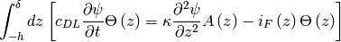
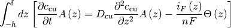
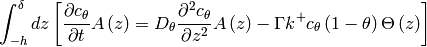
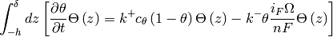
where 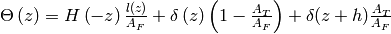. The cross-sectional area ratio is given by,
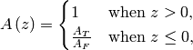
where 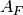 is the cross-sectional area above of the modeling domain and 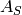 is the cross-sectional area in the trench/via. The length of the perimeter is given by 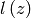 and is a step-function through 0. Also, 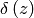 is the Dirac delta function and 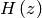 is the Heaviside step function with 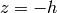 at the bottom of the trench. The current density is given by,
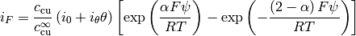
The boundary conditions on the working electrode are included in the volume integrals. Additionally,
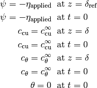
and
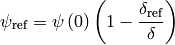
The following code compares the full 1D feature model (but with no feature) with the simple 1D ODE for solving the electrical equation with no suppressor and no cupric depeletion.
>>> import numpy
>>> i0 = 40.
>>> alpha = 0.4
>>> F = 9.6485e4 ## C / mol = J / V / mol
>>> R = 8.314 ## J / K / mol
>>> T = 298. ## K
>>> appliedPotential = -0.275
>>> simulation = Simulation()
>>> simulation.run(delta=100e-6,
... deltaRef=200e-6,
... featureDepth=0.0,
... i0=i0,
... i1=0.0,
... diffusionCupric=1e+10,
... appliedPotential=appliedPotential,
... faradaysConstant=F,
... gasConstant=R,
... alpha=alpha,
... temperature=T,
... totalSteps=200,
... dt=.5e-7,
... dtMax=.5e-7,
... sweeps=5)
>>> timesScipy, potentialsScipy = SimulationODE().run(deltaRef=200e-6)
>>> print numpy.allclose(simulation.parameters['potentials'], potentialsScipy, atol=1e-4)
True
>>> ##import pylab
>>> ##pylab.figure()
>>> ##pylab.plot(timesScipy, simulation.parameters['potentials'], timesScipy, potentialsScipy)
>>> ##pylab.ylabel(r'$\phi\left(0\right)$ (V)')
>>> ##pylab.xlabel(r'$t$ (s)')
>>> ##pylab.savefig('FiPyVScipy.png')
>>> ##raw_input('stopped')
Agreement is good for 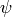.
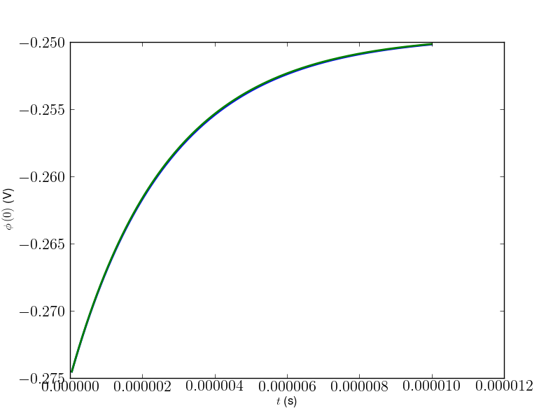Another test is to check that the steady state cupric concentration is correct in the absence of any suppressor.
>>> delta = 150e-6
>>> D = 5.6e-10
>>> charge = 2
>>> cinf = 1000.
>>> simulation = Simulation()
>>> simulation.run(featureDepth=0.0,
... i0=i0,
... alpha=alpha,
... i1=0.0,
... view=False,
... dt=1e-6,
... dtMax=10.,
... totalSteps=200,
... PRINT=False,
... appliedPotential=appliedPotential,
... faradaysConstant=F,
... gasConstant=R,
... delta=delta,
... diffusionCupric=D,
... charge=charge,
... bulkCupric=cinf)
>>> def iF0():
... Fbar = F / R / T
... V = simulation.parameters['potentials'][-1]
... return i0 * (numpy.exp(-alpha * Fbar * V) - numpy.exp((2 - alpha) * Fbar * V))
>>> cupric = simulation.parameters['cupric']
>>> print numpy.allclose(1 / (1 + iF0() * delta / D / charge / F / cinf), cupric[0] / cinf, rtol=1e-3)
True
Run an individual simulation.
| Parameters : |
|
|---|